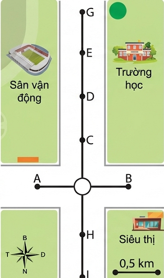
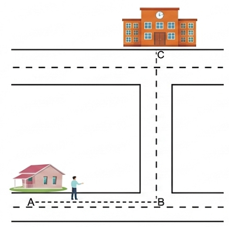
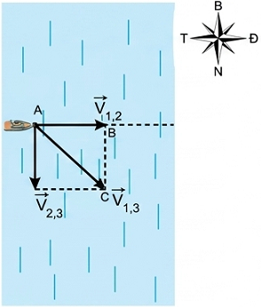

Trong đời sống, tốc độ và vận tốc là hai đại lượng đều dùng để mô tả sự nhanh chậm của chuyển động. Em đã từng sử dụng hai đại lượng này trong những trường hợp cụ thể nào?
Người ta dùng hai cách sau đây để xác định độ nhanh hay chậm của chuyển động:
Bảng 5.1. Kỉ lục chạy ba cự li của một vận động viên người Nam Phi
| Cự li chạy (m) | Thời gian chạy (s) |
|---|---|
| 100 | 9,98 |
| 200 | 19,94 |
| 400 | 43,45 |
❓ Nêu vấn đề
Một vận động viên người Nam Phi đã lập kỉ lục thế giới về chạy ba cự li: 100 m, 200 m và 400 m (Bảng 5.1). Hãy dùng hai cách trên để xác định vận động viên này chạy nhanh nhất ở cự li nào.
Cách 1: Tính quãng đường đi được trong 1 giây (tốc độ \(v = \frac{s}{t}\)):
Vận động viên chạy nhanh nhất ở cự li 200m.
Người ta thường dùng quãng đường đi được trong cùng một đơn vị thời gian để xác định độ nhanh, chậm của chuyển động. Đại lượng này gọi là tốc độ trung bình của chuyển động (gọi tắt là tốc độ trung bình), kí hiệu là \( v \).
\( v = \frac{\text{Quãng đường đi được}}{\text{Thời gian}} \)
\( v = \frac{s}{t} \)
(5.1a)
Lưu ý:
Từ công thức (5.1a) suy ra:
Nếu gọi quãng đường đi được từ thời điểm ban đầu tới thời điểm \( t_1 \) là \( s_1 \), tới thời điểm \( t_2 \) là \( s_2 \) thì:
Tốc độ trung bình của chuyển động là: \( v = \frac{\Delta s}{\Delta t} \) (5.1b)
Bảng 5.2. Thành tích của một nữ vận động viên Việt Nam
| Giải thi đấu | Cự li chạy (m) | Thời gian chạy (s) |
|---|---|---|
| Điền kinh quốc gia 2016 | 100 | 11,64 |
| SEA Games 29 (2017) | 100 | 11,56 |
| SEA Games 30 (2019) | 100 | 11,54 |
❓ Câu hỏi
1. Tại sao tốc độ này được gọi là tốc độ trung bình?
2. Hãy tính tốc độ trung bình ra đơn vị m/s và km/h của nữ vận động viên tại một số giải thi đấu dựa vào Bảng 5.2.
Câu 1: Gọi là tốc độ trung bình vì trên thực tế, trong suốt quãng đường, người hoặc vật có thể chuyển động lúc nhanh lúc chậm (không đều). Giá trị tính được đại diện cho mức độ nhanh chậm trung bình trên toàn bộ quãng đường đó.
Câu 2: Áp dụng công thức \( v = \frac{s}{t} \), đổi sang km/h nhân với 3,6:
Trên xe máy và ô tô, đồng hồ tốc độ (tốc kế) đặt trước mặt người lái xe, chỉ tốc độ mà xe đang chạy vào thời điểm người lái xe đọc số chỉ của tốc kế. Tốc độ này được gọi là tốc độ tức thời.
💡 Em có biết?
Khái niệm tốc độ tức thời liên quan đến phép tính đạo hàm của môn Toán sẽ được học ở lớp 11. Có thể coi tốc độ tức thời là tốc độ trung bình trong một khoảng thời gian rất ngắn.
❓ Câu hỏi tình huống
Bố bạn A đưa A đi học bằng xe máy vào lúc 7 giờ. Sau 5 phút xe đạt tốc độ 30 km/h. Sau 10 phút nữa, xe tăng tốc độ lên thêm 15 km/h. Đến gần trường, xe giảm dần tốc độ và dừng trước cổng trường lúc 7 giờ 30 phút.
a) Tính tốc độ trung bình của xe máy chở A khi đi từ nhà đến trường. Biết quãng đường từ nhà đến trường dài 15 km.
b) Tính tốc độ của xe vào lúc 7 giờ 15 phút và 7 giờ 30 phút. Tốc độ này là tốc độ gì?
a) Thời gian đi từ nhà đến trường: \( t = \text{7h30} - \text{7h00} = 30 \text{ phút} = 0,5 \text{ giờ} \).
Tốc độ trung bình: \( v = \frac{s}{t} = \frac{15}{0,5} = 30 \) km/h.
b)
Các tốc độ này là tốc độ tức thời tại thời điểm đọc.
Biết tốc độ và thời gian chuyển động nhưng chưa biết hướng chuyển động thì chưa thể xác định được vị trí của vật. Biết tốc độ, thời gian chuyển động và hướng chuyển động của vật thì có thể xác định được vị trí của vật.

Hình 5.1
❓ Câu hỏi
Một người đi xe máy qua ngã tư (Hình 5.1) với tốc độ trung bình 30 km/h theo hướng Bắc. Sau 3 phút người đó đến vị trí nào trên hình?
Thời gian di chuyển: \( t = 3 \text{ phút} = \frac{3}{60} \text{ h} = 0,05 \text{ h} \).
Quãng đường đi được: \( s = v \times t = 30 \times 0,05 = 1,5 \) km.
Quan sát tỉ lệ trên Hình 5.1 (mỗi khoảng = 0,5 km), người đó đi theo hướng Bắc được 3 khoảng (1,5 / 0,5 = 3). Vậy người đó sẽ đến vị trí G trên hình.
❓ Nêu vấn đề
Theo em biểu thức nào sau đây xác định giá trị vận tốc? Tại sao?
a) \( \frac{s}{t} \) b) \( v.t \) c) \( \frac{\vec{d}}{t} \) d) \( \vec{d}.t \)
Đáp án đúng là c) \( \frac{\vec{d}}{t} \).
Bởi vì vận tốc là đại lượng vectơ, được xác định bằng thương số giữa độ dịch chuyển (vectơ) và thời gian dịch chuyển. Biểu thức (a) chỉ xác định tốc độ (đại lượng vô hướng).
Trong Vật lí, người ta dùng thương số của độ dịch chuyển và thời gian dịch chuyển để xác định độ nhanh, chậm của chuyển động theo một hướng xác định. Đại lượng này được gọi là vận tốc trung bình, kí hiệu là \( \vec{v} \).
\( \vec{v} = \frac{\vec{d}}{t} \)
(5.2a)
Tương tự như trường hợp tốc độ, ta có thể viết:
\( \vec{v} = \frac{\Delta \vec{d}}{\Delta t} \)
(5.2b)
Trong đó \( \Delta \vec{d} \) là độ dịch chuyển trong thời gian \( \Delta t \).
Vì độ dịch chuyển là một đại lượng vectơ nên vận tốc cũng là một đại lượng vectơ. Vectơ vận tốc có:

Hình 5.2
❓ Vận dụng
Bạn A đi học từ nhà đến trường theo lộ trình ABC (Hình 5.2). Biết bạn A đi đoạn đường AB = 400 m hết 6 phút, đoạn đường BC = 300 m hết 4 phút. Xác định tốc độ trung bình và vận tốc trung bình của bạn A khi đi từ nhà đến trường.
Tổng quãng đường đi được: \( s = AB + BC = 400 + 300 = 700 \) (m).
Tổng thời gian: \( t = 6 \text{ phút} + 4 \text{ phút} = 10 \text{ phút} = 600 \) (s).
Tốc độ trung bình: \( v = \frac{s}{t} = \frac{700}{600} \approx 1,17 \) (m/s).
Vì ABC là tam giác vuông tại B, độ lớn độ dịch chuyển là cạnh huyền AC:
\( d = AC = \sqrt{AB^2 + BC^2} = \sqrt{400^2 + 300^2} = 500 \) (m).
Vận tốc trung bình: có độ lớn \( v = \frac{d}{t} = \frac{500}{600} \approx 0,83 \) (m/s). Hướng từ A đến C.
Vận tốc tức thời là vận tốc tại một thời điểm xác định, được kí hiệu là \( \vec{v}_t \).
Bài tập ví dụ:
Trên đoàn tàu đang chạy thẳng với vận tốc trung bình 36 km/h so với mặt đường, một hành khách đi về phía đầu tàu với vận tốc 1 m/s so với mặt sàn tàu (Hình 5.3).
a) Hành khách này tham gia mấy chuyển động?
b) Làm cách nào để xác định được vận tốc của hành khách đối với mặt đường?
Hình 5.3
Giải:
a) Hành khách này tham gia 2 chuyển động: Chuyển động với vận tốc 1 m/s so với sàn tàu và chuyển động do tàu kéo đi (chuyển động kéo theo) với vận tốc bằng vận tốc của tàu so với mặt đường.
b) Nếu gọi \( \vec{v}_{1,2} \) là vận tốc của hành khách so với tàu, \( \vec{v}_{2,3} \) là vận tốc của tàu so với mặt đường và \( \vec{v}_{1,3} \) là vận tốc của hành khách so với mặt đường thì:
\( \vec{v}_{1,3} = \vec{v}_{1,2} + \vec{v}_{2,3} \)
Đổi \( v_{2,3} = 36 \text{ km/h} = 10 \text{ m/s} \).
Vì các chuyển động trên đều là chuyển động thẳng theo cùng hướng chạy của đoàn tàu nên:
\( v_{1,3} = v_{1,2} + v_{2,3} = 1 + 10 = 11 \text{ m/s}. \)
Hướng của vận tốc là hướng đoàn tàu chạy.
Bài tập ví dụ:
Một ca nô chạy trong hồ nước yên lặng có vận tốc tối đa 18 km/h. Nếu ca nô chạy ngang một con sông có dòng chảy theo hướng Bắc - Nam với vận tốc lên tới 5 m/s thì vận tốc tối đa nó có thể đạt được so với bờ sông là bao nhiêu và theo hướng nào?

Hình 5.4
Giải:
Đổi \( 18 \text{ km/h} = 5 \text{ m/s} \).
Gọi vận tốc của ca nô đối với mặt nước là \( \vec{v}_{1,2} \), vận tốc của nước chảy đối với bờ sông là \( \vec{v}_{2,3} \). Vận tốc của ca nô đối với bờ sông là:
\( \vec{v}_{1,3} = \vec{v}_{1,2} + \vec{v}_{2,3} \)
Vì hai vận tốc vuông góc nhau, suy ra độ lớn:
\( v_{1,3} = \sqrt{v_{1,2}^2 + v_{2,3}^2} = \sqrt{5^2 + 5^2} \approx 7,07 \text{ m/s} \)
Vì \( AB = BC \) (đều bằng 5 m/s) nên tam giác ABC vuông cân, góc \( \widehat{BAC} = 45^\circ \). Hướng của vận tốc nghiêng 45° theo hướng Đông - Nam (Hình 5.4).
📝 Bài tập áp dụng
1. Chọn chiều dương là chiều tàu chạy. Vận tốc tàu \( v_{2,3} = 10 \text{ m/s} \). Vận tốc khách đối với tàu \( v_{1,2} = -1 \text{ m/s} \).
Vận tốc khách đối với đường: \( v_{1,3} = v_{1,2} + v_{2,3} = -1 + 10 = 9 \text{ m/s} \). Hướng cùng chiều tàu chạy.
2. Bơi xuôi dòng (hai vận tốc cùng phương, cùng chiều):
Vận tốc tối đa: \( v_{max} = v_{nguoi} + v_{nuoc} = 1 + 1 = 2 \text{ m/s} \).
3. Vận tốc máy bay và vận tốc gió vuông góc với nhau.
\( v_{tong} = \sqrt{v_{mb}^2 + v_{gio}^2} = \sqrt{200^2 + 20^2} = \sqrt{40000 + 400} = \sqrt{40400} \approx 201 \text{ m/s} \).
Hướng Đông Bắc.
Bài 1: Một ca nô chạy hết tốc lực trên mặt nước yên lặng có thể đạt 21,5 km/h. Ca nô này chạy xuôi dòng sông trong 1 giờ rồi quay lại thì phải mất 2 giờ nữa mới về tới vị trí ban đầu. Hãy tính vận tốc chảy của dòng sông.
Gọi \( v_c = 21,5 \) km/h là vận tốc của ca nô so với nước.
Gọi \( v_n \) là vận tốc của nước so với bờ.
Vận tốc khi xuôi dòng: \( v_{x} = v_c + v_n = 21,5 + v_n \).
Vận tốc khi ngược dòng: \( v_{ng} = v_c - v_n = 21,5 - v_n \).
Vì quãng đường xuôi và ngược là như nhau nên: \( s_x = s_{ng} \)
\( \Rightarrow 1 \times (21,5 + v_n) = 2 \times (21,5 - v_n) \)
\( \Rightarrow 21,5 + v_n = 43 - 2v_n \)
\( \Rightarrow 3v_n = 21,5 \)
\( \Rightarrow v_n \approx 7,17 \) km/h.
Kết luận: Vận tốc chảy của dòng sông là khoảng \( 7,17 \) km/h.
Bài 2: Một người tập thể dục chạy trên một đường thẳng. Người đó chạy nửa đoạn đường đầu với tốc độ 4 m/s và nửa đoạn đường sau với tốc độ 6 m/s. Tính tốc độ trung bình trên cả đoạn đường.
Gọi tổng quãng đường là \( S \). Độ dài mỗi nửa đoạn đường là \( \frac{S}{2} \).
Thời gian chạy nửa đoạn đầu: \( t_1 = \frac{\frac{S}{2}}{v_1} = \frac{S}{2 \times 4} = \frac{S}{8} \).
Thời gian chạy nửa đoạn sau: \( t_2 = \frac{\frac{S}{2}}{v_2} = \frac{S}{2 \times 6} = \frac{S}{12} \).
Tổng thời gian: \( t = t_1 + t_2 = \frac{S}{8} + \frac{S}{12} = S \times (\frac{3}{24} + \frac{2}{24}) = \frac{5S}{24} \).
Tốc độ trung bình: \( v_{tb} = \frac{S}{t} = \frac{S}{\frac{5S}{24}} = \frac{24}{5} = 4,8 \) m/s.
Kết luận: Tốc độ trung bình trên cả đoạn đường là 4,8 m/s.
Bài 3: Một người lái máy bay thể thao đang tập bay ngang. Khi bay từ A đến B thì vận tốc tổng hợp của máy bay là 15 m/s theo hướng 60° Đông - Bắc và vận tốc của gió là 7,5 m/s theo hướng Bắc. Hãy chứng minh rằng khi bay từ A đến B thì người lái phải luôn hướng máy bay về hướng Đông.
Gọi \( \vec{v}_{13} \) là vận tốc tổng hợp của máy bay, \( v_{13} = 15 \) m/s (hướng tạo với phương Bắc góc 60°, về phía Đông).
Gọi \( \vec{v}_{23} \) là vận tốc của gió, \( v_{23} = 7,5 \) m/s (hướng Bắc).
Gọi \( \vec{v}_{12} \) là vận tốc của máy bay đối với gió (hướng người lái cần hướng mũi máy bay).
Ta có công thức cộng vận tốc: \( \vec{v}_{13} = \vec{v}_{12} + \vec{v}_{23} \Rightarrow \vec{v}_{12} = \vec{v}_{13} - \vec{v}_{23} \).
Phân tích \( \vec{v}_{13} \) theo 2 thành phần (Bắc-Nam và Đông-Tây):
Vận tốc gió hoàn toàn theo hướng Bắc: \( v_{23\text{B}} = 7,5 \) m/s.
Suy ra vận tốc máy bay đối với gió (hướng người lái):
\( \vec{v}_{12} \) có thành phần hướng Bắc: \( 7,5 - 7,5 = 0 \).
\( \vec{v}_{12} \) có thành phần hướng Đông: \( 7,5\sqrt{3} \) m/s.
Vì thành phần hướng Bắc bằng 0 và chỉ còn thành phần hướng Đông dương, nên người lái phải luôn hướng máy bay về hướng Đông.